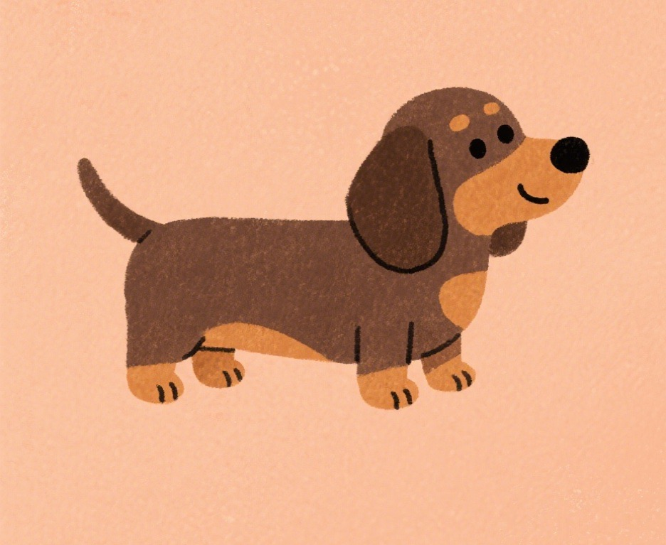
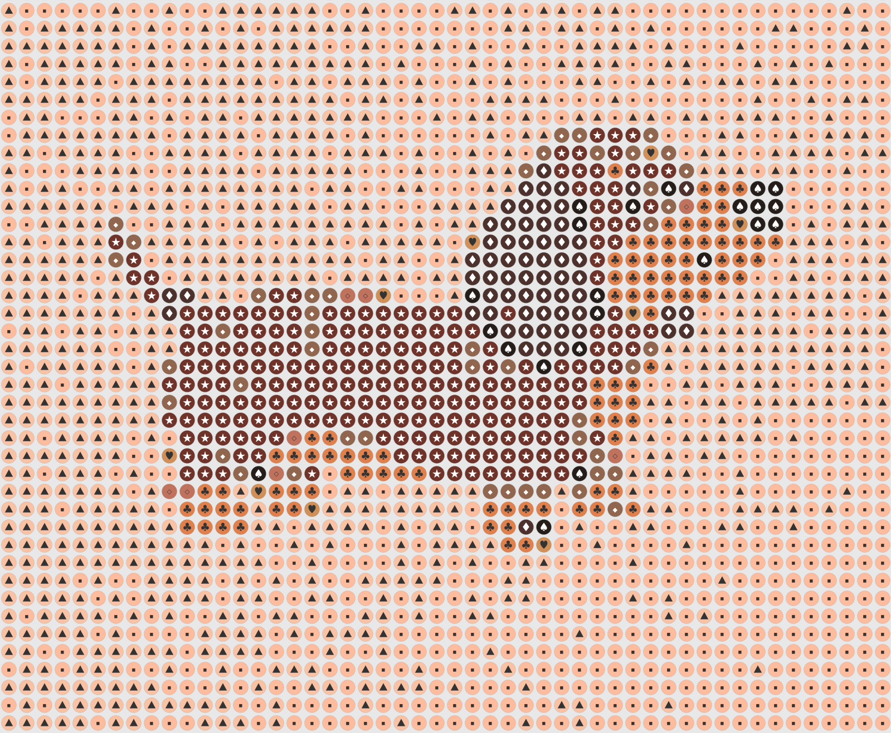

免費線上工具 · 無需註冊
把喜歡的圖片
變成拼豆圖紙
上傳任何圖片，自動轉換成像素風格的拼豆圖紙。支援 9 大品牌、992 種真實色號，下載 PDF 就能開始拼豆。
9
支援品牌
992
真實色號
100%
免費使用
支援品牌
MARDHamaArtkal SArtkal RArtkal CArtkal APerlerPerler MiniNabbi
什麼是拼豆？
拼豆（Fuse Beads）是一種小型塑膠珠子，放在模板板上排列出圖案後，用熨斗加熱讓珠子融合在一起，就能做出獨一無二的像素風格作品。不管是角色、風景還是文字，都能用拼豆來呈現。
轉換效果預覽
原始圖片經過轉換後，會變成像素風格的拼豆圖紙
Original

Bead Pattern

怎麼使用？
只要四個步驟，就能從圖片產生拼豆圖紙
1
上傳圖片
選擇或拖曳你喜歡的圖片
2
調整設定
選擇品牌、板子大小、顏色數量
3
一鍵轉換
自動產生像素風格拼豆圖紙
4
下載圖紙
匯出 PNG 或 PDF，開始拼豆
功能特色
9 大品牌色盤
MARD、Hama、Artkal S/R/C/A、Perler、Perler Mini、Nabbi，共 992 種真實色號
多種板子尺寸
20×20、30×30、40×40、50×50、60×60 或自訂尺寸，靈活搭配你的拼豆板
符號輔助辨色
開啟符號模式，每個顏色都有專屬符號，不怕搞混相近色
PDF 含色號清單
下載的 PDF 自動附上顏色清單與用量統計，方便採購
開始拼豆你需要
拼豆珠子
選擇你喜歡的品牌
拼豆板
方形模板板
助燙紙
烘焙紙也可以
熨斗
加熱融合珠子
常見問題
這個工具是免費的嗎？
是的，完全免費，無需註冊，也沒有使用次數限制。
我的圖片會被上傳到伺服器嗎？
不會。所有處理都在你的瀏覽器中完成，圖片不會離開你的裝置。
支援哪些拼豆品牌？
目前支援 MARD、Hama、Artkal S/R/C/A、Perler、Perler Mini、Nabbi 共 9 個品牌，992 種真實色號。
可以自訂拼豆板的大小嗎？
可以。可選擇 20×20、30×30、40×40、50×50、60×60，或設定 10–200 的自訂寬高（總格數最多 40,000）。
下載的 PDF 包含什麼？
PDF 包含完整的拼豆圖紙、顏色清單、各色號用量統計，方便你採購材料。